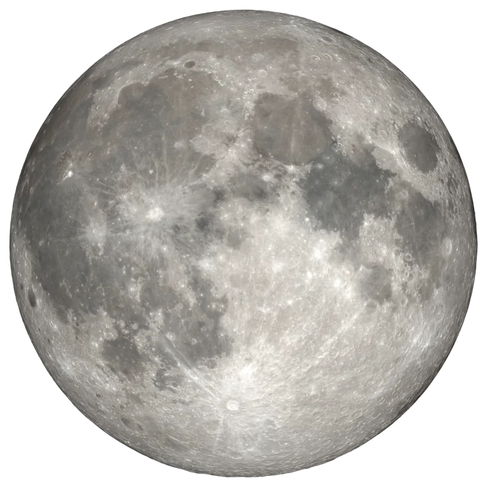

macOS menu bar · 14 Sonoma or newer
Your desktop, lit by tonight's moon.
Lunar paints your wallpaper with the moon as it actually is today — computed on your Mac from Jean Meeus's Astronomical Algorithms, painted with NASA photography, updated silently every morning.
Free and MIT-licensed · about 20 MB of memory · zero network calls
- Phase
- —
- Illuminated
- —
- Age
- —

—
The cycle
Eight photographs, one synodic month
Lunar ships eight public-domain photographs from NASA's Scientific Visualization Studio — one per phase. The synodic month is divided into eight buckets of 3.691 days, each centred on its astronomical event, so the picture on your desktop is the one that matches the sky.
Northern-hemisphere orientation: the lit limb is on the right while waxing, on the left while waning. Percentages above are today's illumination at each phase's centre, not a fixed table.
The math
Not an approximation of the moon
Most moon widgets divide the days since a reference new moon by 29.53 and call it a phase. That drifts, because the moon does not keep a constant pace. Lunar runs the real ephemeris.
Meeus chapters 25, 47 and 48, in full: solar position with the equation of centre, lunar position with all 120 periodic terms (60 for longitude and distance, 60 for latitude), the planetary perturbation corrections, and the illuminated fraction from the true Sun–Earth–Moon phase angle rather than a mean cycle.
The chart below is the proof, and it is not a screenshot. Your browser is running a direct port of Sources/Lunar/PhaseCalculator.swift right now and comparing its output against twenty published U.S. Naval Observatory illumination values from the app's own test suite.
Show the numbers
| Date (12:00 UT) | USNO | Lunar | Δ |
|---|
Behaviour
Quiet, and correct about the awkward parts
Setting a wallpaper on macOS is deceptively fiddly. These are the cases Lunar handles so you never think about it.
Every morning, and on wake
Runs once a day plus on every wake-from-sleep, so the desktop is never showing yesterday's moon after the lid comes up.
Every connected display
Paints all screens and re-applies when a monitor is plugged or unplugged, scaling to the largest display attached.
Every Space, eventually
macOS only lets the wallpaper API touch the Space active on each screen at that moment. Lunar watches activeSpaceDidChangeNotification and re-applies quietly, so each stale Desktop heals the first time you visit it.
Light and dark
Keeps both appearance slots in sync, so switching themes never reverts you to the default wallpaper.
No Dock icon
One moon in the menu bar. Click it for today's phase, the next phase, refresh, the log, launch-at-login and quit.
Nothing leaves the Mac
No network calls, no telemetry, no accounts, no dependencies. The ephemeris is arithmetic, so it needs nothing but the clock.
Install
Two minutes, then never again
Requires macOS 14 (Sonoma) or newer. Building from source additionally needs Xcode 15+ or the Swift command line tools.
Easiest
Download the DMG
- Grab the latest DMG from the releases page.
- Open it and drag Lunar.app into Applications.
- The build is ad-hoc signed and not notarised, so the first launch needs a right-click → Open. Every launch after that is normal.
From source
Clone and install
The script assembles and installs the app bundle into ~/Applications.
git clone https://github.com/romankhadka/lunar.git
cd lunar && ./scripts/install.sh
open ~/Applications/Lunar.appOptional
Your own imagery
Menu → Open Phases Folder…, drop in eight square PNGs named exactly like this, then Refresh This Desktop. Any square resolution works.
new.pngwaxing_crescent.pngfirst_quarter.pngwaxing_gibbous.png
full.pngwaning_gibbous.pnglast_quarter.pngwaning_crescent.png
If something looks wrong
The log
Menu → Open Log, or read it directly. Rotates at 1 MB.
~/Library/Logs/Lunar/lunar.log